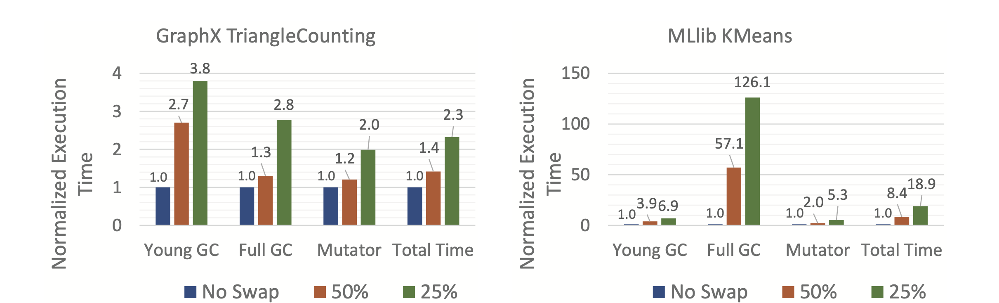

The paper series haven’t been updated for a long time. This is because a lot of changes I made recently to my life and was very busy for the last month. Now that everything is settled. Let’s continue the paper series. I attended OSDI/ATC 2021 last week and one paper brought to my attention. The paper implemented the thing I was thinking about how to relax the memory pressure in Spark and seamlessly access remote JVM heap. But more interestingly in the Q&A session the author mentioned a previous paper that took a step further of creating a distributed JVM which is our target this week. The paper might not be motivated to solve the same problem I have but certainly it could be used for my problem as well.
Motivation
- Fast RDMA network and disaggregated data center structure.
- No previous work cares about managed language.
- Heap space remote access.
- How to handle GC. GC remote objects will block and slow down applications.
- Object-oriented data structures have random access pattern and highly sensitive to latency.
- Naive approach of NVMe-oF mounts remote memory as ramdisk. The paper evaluates with this approach (baseline). Seems like one can launch a JVM instance with remote memory with this approach?
- Results show big overhead of GC
Design (Universal Java Heap)
- Separate the whole heap space to different memory servers and the CPU server just access heaps remotely.
- CPU server keeps metadata and a local memory to cache active pages.
- Evicted pages go to remote memory server.
- Each object has the same virtual address on both the CPU server and memory servers.
- Offload GC to memory servers.
- Tracing is offloaded to local memory server.
Evaluation
- Implementation involves LJVM (OpenJDK 12.0.2) for memory server, JVM for CPU server and Linux kernel for paging and RDMA (NVMe-oF).
- Memory server tracing overhead is 13% utilization, and a single core can support 8 Spark applications.
- Spark apps: GraphX-CC, GraphX-PageRank, PageRank, TriangleCount, MLlib-Bayes with data size 2G on a 4 node cluster.
- Results shows that GC offload has 3.23x performance improvement.